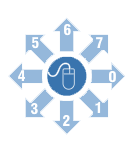

What?
A mouse gesture library written soley in javascript with power and flexiblity to mould
itself for you. Implemented on Mootools following the Object Oriented
standards. Library is aimed to set out a future framework for mouse
guesters for any browser including modern mobile devices.
How?
Its based on simplicity. Three major concepts.
- A probe, which probes the pointing device. Currently there
is a Moousture.MouseProbe (P.S. It already supports iPhone).
- A monitor, which tests the stability of probed
device on given intervals and accordingly notifies Moousture events
(onStable, onUnstable, onMove).
- A Moousture recorder class that records the mouse
movements and invoke the guesture object passed to it.
Easy yet powerful
Each class allows you to tune the way gestures for yourself.
For example:
new Moousture.Monitor(20, 2);
Creates Monitor which polls probe position after every 20ms
and allows error of 2px to be ignored (not causing to trigger any event)
new Moousture.MouseProbe($(document));
Creates a mouse probe for entire document. Note the power you
have to probe any DOM object
new Moousture.Recorder({maxSteps: 20, minSteps: 8});
Creates a Moousture event class that can keep track of
maxSteps mouse movements at maximum. A gesture movment with movements
less that minSteps would be simply ignored.
To start probing and recieve gesture events one can simply call
.start(probeObj, mooustureObj) of StabilityMonitor. Notice that the
gestures must be registered with callback functions first for recieving
gesture completion events.
More demos
Its super easy!
- Create a guesture matcher, currently there are only two gesture
objects Moousture.LevenMatcher, and Moousture.ReducedLevenMatcher.
gstr = new Moousture.ReducedLevenMatcher();
- Add gesture vectors to matcher object, (see details below in Create your own gestures).
gstr.addGesture([3,2,1,0,7,6,5,4], ccwCircle);
- Guesture callback function takes one parameter error recieved from
matching algorithm. Threshold that value (if required) to make your
gestures more sleek.
function ccwCircle(error){
if(error >= 0.6)
return ;
...
}
- Create a probe object that will probe the pointing device. Currently
there is a mouse probe that take the $(element) to probe for. So
passing a div id will cause the probe to trigger events only when they
occur on the passed DOM element.
probe = new Moousture.MouseProbe($(document));
- Create a recoder
object to record the movement , maxSteps and minSteps in options object
will specify the maximum and minimum number of steps to be recorded,
and macher is required matcher object to trigger the appropriate
gesture.
recorder = new Moousture.Recorder({maxSteps: 20, minSteps: 8, matcher: gstr});
- Create a monitor specifying the interval to poll and the amount of error allowed for gesture in pixels.
monitor = new Moousture.Monitor(30, 2);
- Finally start the monitor.
monitor.start(probe, recorder);
- You can stop the gesture triggering any time by calling .stop() of monitor object.
monitor.stop();
Create your own gestures

Above image gives you all the power to make your own
gestures. So for example one can make a gesture for letter W as [1, 7,
1, 7]. This gesture registration is even more simple.
matcherObj= new Moousture.ReducedLevenMatcher();
function wGuessed(error){
...
}
matcherObj.addGesture([1, 7, 1, 7], wGuessed);
Download
Issues
In case of bugs, wishlist, issues please report to Issue tracker